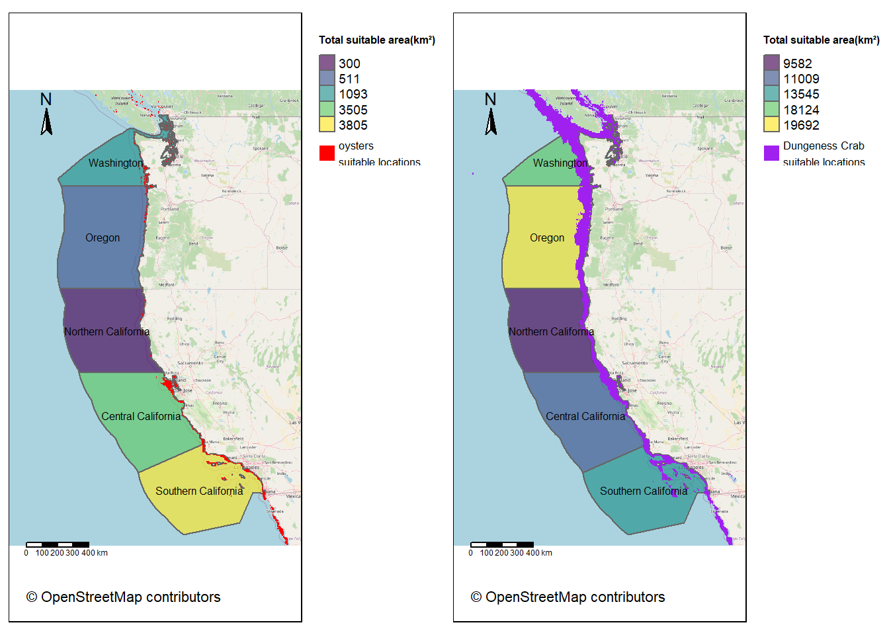

# Load libraries
library(here)
library(sf)
library(stars)
library(terra)
library(units) # for droping units of the data (Bathymetry)
library(tmap)
library(tmaptools) # for reading OpenStreetMap data
library(tidyverse)
library(viridisLite)Prioritizing Potential Aquaculture
Oysters and Dungeness Crab
Objective
Determining which Exclusive Economic Zones (EEZ) on the West Coast of the US are best suited to developing marine aquaculture for several species of oysters and Dungeness Crab. Suitable locations will be determined based on the range of suitable sea surface temperature (SST) and depth values for the species.
Library and data preparation
1. Load libraries
2. Prepare data
# Load data
## West Coast EEZ
wc_region <- sf::st_read(here::here("data","wc_regions_clean.shp"), quiet = TRUE)
## Bathymetry
Bathymetry <- stars::read_stars(here::here("data", "depth.tif"), quiet = TRUE)
### Drop the units (m) of Bathymetry data
Bathymetry <- drop_units(Bathymetry)
## Sea Surface Temperature
### Read the path of all temperature files
files <- list.files(
here("data"), pattern = "average*",
full.names = TRUE)
SST <- data.frame(file_name = files)
### Combine all temperature file into a raster stack and calculate average
SST_stack <- SST$file_name %>%
lapply(read_stars) %>% # Generate a list with stars files
do.call(c, .) # Generate the raster stack
### Calculate average temperature and save as a raster
SST_ave <- st_apply(SST_stack, MARGIN = c("x", "y"),
FUN = mean, na.rm = TRUE) %>%
write_stars("SST_mean.tif")
### Convert average SST from Kelvin to Celsius
SST_aveC <- SST_ave - 273.15# Check if coordinate reference systems (CRS) of all data match
if ((st_crs(wc_region) == st_crs(Bathymetry)) &&
(st_crs(wc_region) == st_crs(SST_aveC))) {
print("all match!")
} else {
print("not match")
}[1] "all match!"# Crop depth raster to match the extent of the SST raster
SST_extent <- st_bbox(SST_aveC)
Bathymetry_cropped <- st_crop(Bathymetry, SST_extent)
# Resample the depth data to match the resolution of the SST data
# using the nearest neighbor approach
Bathymetry_resampled <- st_warp(Bathymetry_cropped, SST_aveC, method = "near")# Check that the depth and SST match in resolution, extent, and coordinate reference system
## Try to stack
stack_raster <- tryCatch({
c(SST_aveC, Bathymetry_resampled) # Try stacking the rasters
}, error = function(e) {
NULL # If stacking fails, return NULL
})
## Check if successfully stack
if (!is.null(stack_raster)) {
print("all match!")
} else {
print("not match")
}[1] "all match!"Set workflow for the species
1. Select suitable locations for oysters and calculate total suitable area in each EEZ
Code
oysters <- function(Species, SST, Depth, maxT, minT,
maxDepth, minDepth, EEZ, SST_extent){
# Set suitable condition to 1 and unsuitable condition to 0
# This process will generates a "matrix"/"array" objective
SST_suit <- ifelse(SST[[1]] >= minT & SST[[1]] <= maxT, 1, 0)
Depth_suit <- ifelse(Depth[[1]] >= minDepth & Depth[[1]] <= maxDepth, 1, 0)
# Transform the "matrix"/"array" objective to "stars" format
SST_stars <- st_as_stars(SST_suit, dimensions = st_dimensions(SST))
Depth_stars <- st_as_stars(Depth_suit,
dimensions = st_dimensions(Depth))
# Find suitable locations
oyster_suit <- SST_stars * Depth_stars
# Set unsuitable area as NA
oyster_suit[oyster_suit == 0] <- NA
# Transform data format from stars/sf to terra
# Keep same projection (EPSG:5070, Projection method: Albers Equal Area, unit:m)
oyster_suit_terra <- terra::rast(oyster_suit) %>%
terra::project("EPSG:5070")
wc_region_terra <- terra::vect(EEZ) %>%
terra::project("EPSG:5070")
# Find suitable locations within the extent of Exclusive Economic Zones
oyster_suit_EEZ <- terra::mask(oyster_suit_terra, wc_region_terra)
# Rasterize Exclusive Economic Zones data
EEZ_rasterized <- terra::rasterize(wc_region_terra,
oyster_suit_terra,
field = "rgn_id")
# Calculate suitable area for EEZs and join this to original EEZ (sf file)
## Generate a raster with area information (for all cells)
cell_size <- terra::cellSize(oyster_suit_EEZ)
## Mask suitable locations on the area raster
cell_area_masked <- mask(cell_size, oyster_suit_EEZ)
## Calculate suitable area for each EEZ
suitable_area <- terra::zonal(cell_area_masked, EEZ_rasterized,
fun = "sum",
na.rm = TRUE)
## Transform the unit of the data and add the name of EEZ
suitable_area$suitable_area_km2 <- suitable_area$area / 1e6
suitable_area$EEZ_name <- c("Oregon", "Northern California",
"Central California", "Southern California",
"Washington")
## Only keep useful information
suitable_area <- suitable_area[, c("EEZ_name", "suitable_area_km2")]
## Join total suitable area information to original EEZ (sf file)
EEZ_suitable_area <- left_join(wc_region, suitable_area,
by = c("rgn" = "EEZ_name"))
# Map the suitable locations for oyster and EEZ with total suitable area
## Get unique area values for each EEZ and sort them
unique_values <- sort(unique(EEZ_suitable_area$suitable_area_km2))
## Generate breaks
breaks <- c(unique_values, max(unique_values) + 1)
## Generate palette
palette <- viridisLite::viridis(length(unique_values))
## Download base map from OSM of the bounding box
background_data <- tmaptools::read_osm(sf::st_bbox(SST_extent))
## Keep data the same CRS to OSM
oyster_suit_sameCRS <- st_transform(oyster_suit,
crs = st_crs(background_data))
EEZ_suitable_area_sameCRS <- st_transform(EEZ_suitable_area,
crs = st_crs(background_data))
oyster_EEZ_suitable_map <- tm_shape(background_data) +
tm_rgb() +
tm_shape(EEZ_suitable_area_sameCRS) +
tm_polygons(
col = "suitable_area_km2",
breaks = breaks,
labels = as.character(ceiling(unique_values)),
palette = palette,
alpha = 0.65,
title = "Total suitable area(km²)") +
tm_shape(oyster_suit_sameCRS) +
tm_raster(palette = "red",
title = "",
labels = paste(Species, "\nsuitable locations")) +
tm_shape(EEZ_suitable_area) +
tm_text("rgn", size = 0.5) +
tm_credits("© OpenStreetMap contributors",
position=c("left", "bottom")) +
tm_layout(legend.text.size = 0.6,
legend.title.size = 1,
legend.title.fontface = "bold",
legend.outside = TRUE) +
tm_scale_bar(position = c(0.05, 0.1),
breaks = c(0, 100, 200, 300, 400)) +
tm_compass(position = c(0.05, 0.8),
size = 1.3)
}2. Select suitable locations for Dungeness Crab and calculate total suitable area in each EEZ
Code
# Set workflow for selecting suitable environment conditions for crab
crabs <- function(Species, SST, Depth, maxT, minT,
maxDepth, minDepth, EEZ, SST_extent){
# Set suitable condition to 1 and unsuitable condition to 0
# This process will generates a "matrix"/"array" objective
SST_suit <- ifelse(SST[[1]] >= minT & SST[[1]] <= maxT, 1, 0)
Depth_suit <- ifelse(Depth[[1]] >= minDepth & Depth[[1]] <= maxDepth, 1, 0)
# Transform the "matrix"/"array" objective to "stars" format
SST_stars <- st_as_stars(SST_suit, dimensions = st_dimensions(SST))
Depth_stars <- st_as_stars(Depth_suit,
dimensions = st_dimensions(Depth))
# Find suitable locations
crab_suit <- SST_stars * Depth_stars
# Set unsuitable area as NA
crab_suit[crab_suit == 0] <- NA
# Transform data format from stars/sf to terra
# Keep same projection (EPSG:5070, Projection method: Albers Equal Area, unit:m)
crab_suit_terra <- terra::rast(crab_suit) %>%
terra::project("EPSG:5070")
wc_region_terra <- terra::vect(EEZ) %>%
terra::project("EPSG:5070")
# Find suitable locations within the extent of Exclusive Economic Zones
crab_suit_EEZ <- terra::mask(crab_suit_terra, wc_region_terra)
# Rasterize Exclusive Economic Zones data
EEZ_rasterized <- terra::rasterize(wc_region_terra,
crab_suit_terra,
field = "rgn_id")
# Calculate suitable area for EEZs and join this to original EEZ (sf file)
## Generate a raster with area information (for all cells)
cell_size <- terra::cellSize(crab_suit_EEZ)
## Mask suitable locations on the area raster
cell_area_masked <- mask(cell_size, crab_suit_EEZ)
## Calculate suitable area for each EEZ
suitable_area <- terra::zonal(cell_area_masked, EEZ_rasterized,
fun = "sum",
na.rm = TRUE)
## Transform the unit of the data and add the name of EEZ
suitable_area$suitable_area_km2 <- suitable_area$area / 1e6
suitable_area$EEZ_name <- c("Oregon", "Northern California",
"Central California", "Southern California",
"Washington")
## Only keep useful information
suitable_area <- suitable_area[, c("EEZ_name", "suitable_area_km2")]
## Join total suitable area information to original EEZ (sf file)
EEZ_suitable_area <- left_join(wc_region, suitable_area,
by = c("rgn" = "EEZ_name"))
# Map the suitable locations for crab and EEZ with total suitable area
## Get unique area values for each EEZ and sort them
unique_values <- sort(unique(EEZ_suitable_area$suitable_area_km2))
## Generate breaks
breaks <- c(unique_values, max(unique_values) + 1)
## Generate palette
palette <- viridisLite::viridis(length(unique_values))
## Download base map from OSM of the bounding box
background_data <- tmaptools::read_osm(sf::st_bbox(SST_extent))
## Keep data the same CRS to OSM
crab_suit_sameCRS <- st_transform(crab_suit,
crs = st_crs(background_data))
EEZ_suitable_area_sameCRS <- st_transform(EEZ_suitable_area,
crs = st_crs(background_data))
crab_EEZ_suitable_map <- tm_shape(background_data) +
tm_rgb() +
tm_shape(EEZ_suitable_area_sameCRS) +
tm_polygons(
col = "suitable_area_km2",
breaks = breaks,
labels = as.character(ceiling(unique_values)),
palette = palette,
alpha = 0.65,
title = "Total suitable area(km²)") +
tm_shape(crab_suit_sameCRS) +
tm_raster(palette = "purple",
title = "",
labels = paste(Species, "\nsuitable locations")) +
tm_shape(EEZ_suitable_area) +
tm_text("rgn", size = 0.5) +
tm_credits("© OpenStreetMap contributors",
position=c("left", "bottom")) +
tm_layout(legend.text.size = 0.6,
legend.title.size = 1,
legend.title.fontface = "bold",
legend.outside = TRUE) +
tm_scale_bar(position = c(0.05, 0.1),
breaks = c(0, 100, 200, 300, 400)) +
tm_compass(position = c(0.05, 0.8),
size = 1.3)
}Generate suitable locations and select suitable EEZs for oysters and Dungeness Crab
oysters <- oysters(Species = "oysters",
SST = SST_aveC, Depth = Bathymetry_resampled,
maxT = 30, minT = 11,
maxDepth = 0, minDepth = -70,
EEZ = wc_region, SST_extent = SST_extent)
crabs <- crabs(Species = "Dungeness Crab",
SST = SST_aveC, Depth = Bathymetry_resampled,
maxT = 19, minT = 3,
maxDepth = 0, minDepth = -360,
EEZ = wc_region, SST_extent = SST_extent)tmap_arrange(oysters, crabs, ncol = 2)
Figure1 Suitable locations and total suitable area in each EEZ for oysters (left) and Dungeness Crab (right)
According to Figure 1, we can see that both oysters and Dungeness Crab have wide suitable habitats across the West Coast of the US, although there are much more suitable locations for Dungeness Crab than oysters. Oysters are particularly concentrated in the southern part, but Dungeness Crab prefers the northern part. The statistic of total suitable areas within each Exclusive Economic Zone shows similar patterns, where Oregon and Washington are more suitable for Dungeness Crab aquaculture, while Central and Southern California are more suitable for oyster aquaculture.
Citations
| Data/Reference | Citation | Link |
|---|---|---|
| OpenStreetMap | OpenStreetMap contributors. (2015) Planet dump. [November 21, 2024]. Retrieved from https://planet.openstree | https://download.geofabrik.de/ |
| SeaLifeBase - Oyster/Dungeness Crab | SeaLifeBase. [November 21, 2024].Retrieved from https://www.sealifebase.ca/search.php | https://www.sealifebase.ca/search.php |
| NOAA’s 5km Daily Global Satellite Sea Surface Temperature Anomaly v3.1. | NOAA Coral Reef Watch. 2024, updated daily. NOAA Coral Reef Watch Version 3.1 Daily 5km Satellite Regional Virtual Station Time Series Data for West Coast of the US, 2008-2012. College Park, Maryland, USA: NOAA Coral Reef Watch. Data set accessed 2024-11-19 at https://coralreefwatch.noaa.gov/product/5km/index_5km_ssta.php | https://coralreefwatch.noaa.gov/product/5km/index_5km_ssta.php |
| General Bathymetric Chart of the Oceans (GEBCO) | GEBCO. [November 21, 2024]. Retrieved from https://www.gebco.net/data_and_products/gridded_bathymetry_data/#area | https://www.gebco.net/data_and_products/gridded_bathymetry_data/#area |